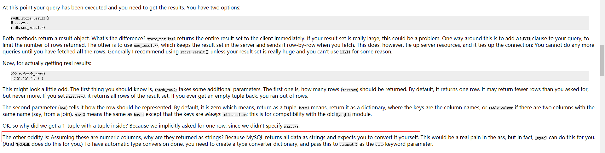
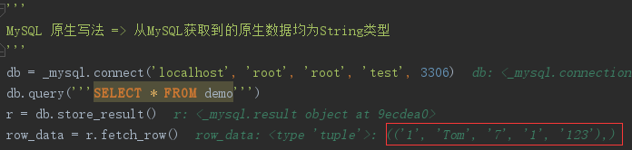
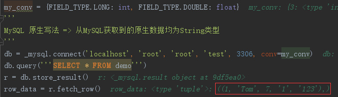
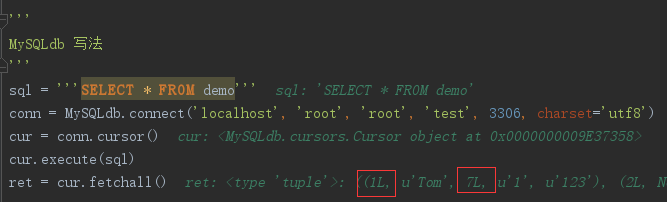
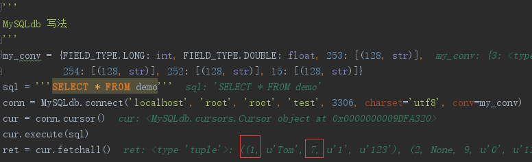

环境依赖
MySQL 5.7.17
Python 2.7
Mysql-python 1.2.5
MySQLdb是基于MySQL C API(原生MySQL API)为核心的面向Python的接口，封装了许多MySQL C API的方法，简化Python操作MySQL的难度。在原生的MySQL API中，万物皆String。(当然，可以通过自定义conv来实现数据类型的转化)。官方解释如下图所示：

Eg：原始的数据源中，age列是int类型，基于原生API查询后，所有的结果均为String类型；执行效果如下图所示：

可以通过自定义转换dict来实现查询结果的类型转换；具体的实现也很简单，只需要在mysql初始化的时候，自定义conv参数即可(eg：将SQL中int转化为Long，将SQL中的float转化为Double)，样例代码如下图所示：

由于原始API并不是那么的拿来主义，直接基于此操作需要care的东西太多，所以才有了MySQLdb这样简单易上手的第三方依赖包。MySQLdb带来的便捷主要体现在一下两点：
- 封装并提供很多API接口，降低使用门槛
- 自动适配原始SQL表的字段类型
由于高级的API方法在实际工作中以用到很多，并且和其他语言的mysql驱动没太大差别，在这里不做讨论。重点分享一下第二点，在数据类型自定识别中，存在如下一种情况：基于MySQLdb查询int字段时，实际默认的返回类型是Long型，而非int。 Eg：

官方给出的解释是：while MySQL’s INTEGER column translates perfectly into a Python integer, UNSIGNED INTEGER could overflow, so these values are converted to Python long integers instead. 简单的说，就是MySQL的int类型转化为Python的int类型时，可能存在无符号整形精度丢失的情况。如何理解这句话：通过在程序中(Python)，不会刻意的定义一个无符号的整形变量，一般默认的int为有符号整形，eg：假如为int32，则对应的有符号整形的范围为：-2^(32-1) ~ 2^(32-1) - 1；相反无符号整数的范围为：0 ~ 2^32 - 1；所以当数据可中指定int为无符号整型时，程序中用有符号整形接受，就会存在因为数据范围不一致而导致的数据精度丢失情况。基于此原因，MySQLdb在设计时，为了规避该潜在问题，默认将int类型转化为long型。这就是为什么整形查询结果后面会带有L后缀的原因。
当然MySQLdb也可以支持类似原生API那种通过自定义conv参数的方式来实现数据类型的自定义(不过不建议用户这样操作)。Eg：将SQL中Long转化为int，将SQL中的double转化为flout，代码样例如下图所示：

因为MySQLdb对应所有的mysql数据类型都有一套自己默认的转化映射关系(详见源码：MySQLdb.converters)，对于原生API，可以指定自己想转化的特定数据列；但是该方法在MySQLdb中并不那么的适用；如果要自定义数据类型，就必须指定所涵盖的所有数据列，这样很有可能因为枚举不够全面而导致程序报错的情况；所以在实际工作时，不建议在这一步转化数据类型，如有需要，在将数据加载到内存后，再转化成所需要的类型。
参考链接：官方Doc


 Home
Archives
Tags
About
Search
Home
Archives
Tags
About
Search